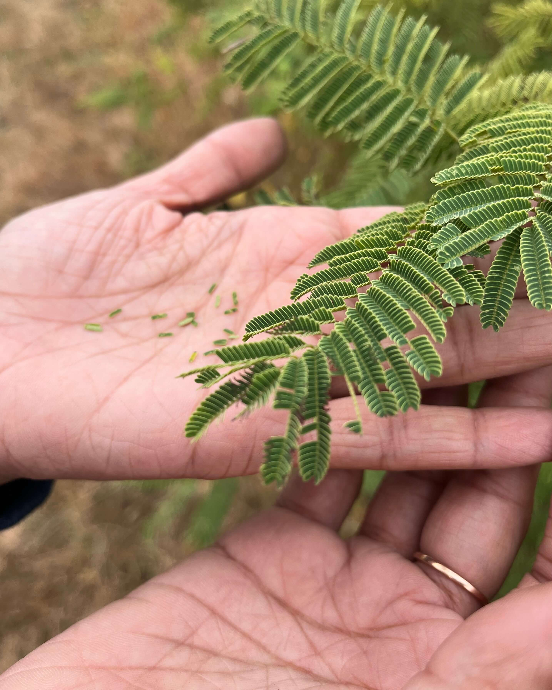
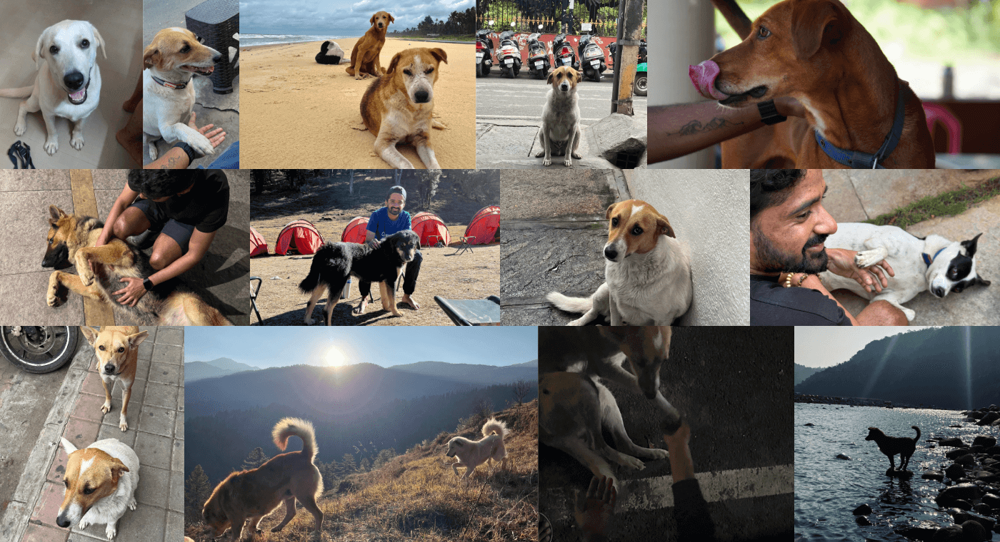
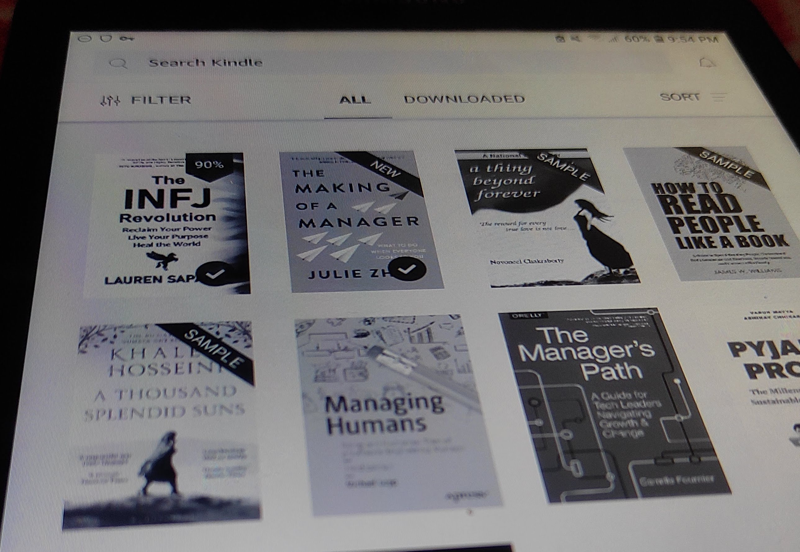
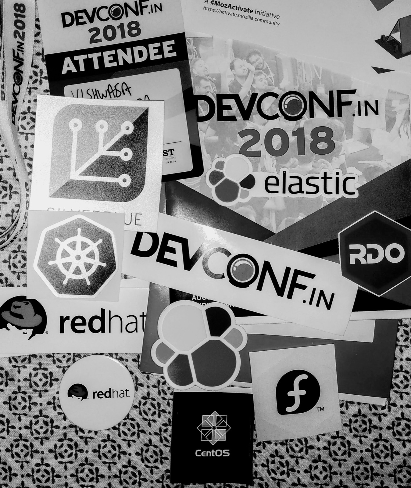
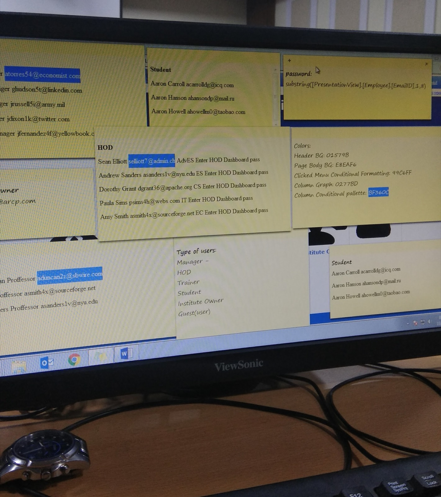

Blog
This is where I write about my life, technology, travel and whatever that doesn't let me sleep at night.

Leap of Trust
On decision paralysis, the limits of preparation, and why the things that actually shape our lives are rarely on the spreadsheet.

Trying to Cure the Incurable
My hands and feet have been sweating since I was six months old. This is what two years of actually trying to do something about it looked like.

Story of Two Dogs, A Decade Apart
This is a post dedicated to two of the bestest boys that changed my perspective about life

HIGHlights of My 2022

Renewing Old Hobbies, Trying New Things and Self Reflection
Looking back into 2020 and 2021
Getting Away from Notification Hell
How to avoid notification hell and reduce context switching.
Series of Fortunate Events
How my interest in WebDev changed my perspective of seeing things.
UX - Where Looks Does Matter
My thoughts on importance of User Experience, Usability and Interaction Design
Weird, Odd or Unique
Choosing between what's right and what's mainstream!

The Contribution Game
How to spend your time on internet wisely by contributing to open source, wikipedia etc.
That #Wanderlust feeling
Why to travel so much?

Life on Internet - Revisited
Timeline of my journey with the internet.
The Sweaty Situation
What is hyperhidrosis, it's effects on normal lifestyle.

The Todo-list Addiction
Best Todo Apps for Mobile and PC/Mac in 2019
3 Reasons why Photography is one the best hobby
3 Reasons why Photography is one the best hobby
First One Here
My First Post on my Jekyll Blog